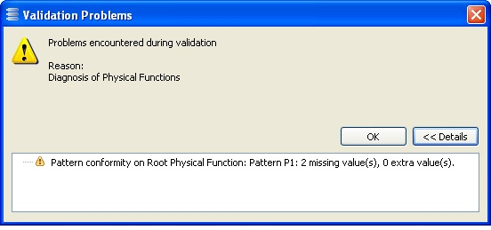

Model Validation Feature (Capella only)
Pattern instances may or not conform to their pattern, due to pattern and/or instance evolution. It is possible to detect all non-conforming instances during the classic model validation phase.
To ensure that pattern conformity is taken into account during validation, click “Preferences” in the “Window” menu. In “Model Validation”, pattern conformity is represented as a consistency constraint. Activate it to enable the detection of non-conforming instances.

Warning: Checking this constraint takes time. It is usually better to leave the constraint disabled for large models. Instead, instances can be checked individually for conformity using the Instance Management Panel
(see Instance Management -> The check button ).
Model validation can then be run as usual via the dedicated menu item.

If an instance does not conform to its pattern, a warning will be present in the list of problems as in the figure below.

Note that pattern instances can also be checked and validated individually via the dedicated GUI
(see Instance Management -> The check button ).